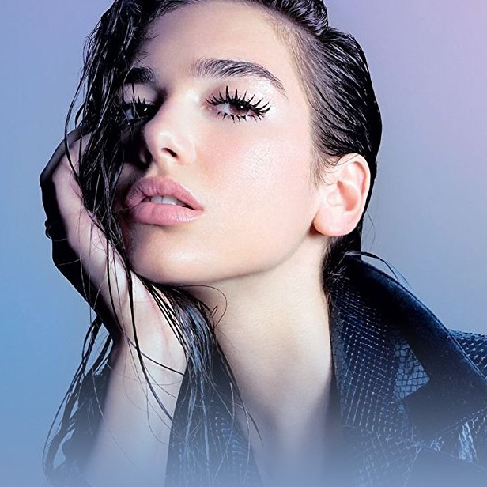

39,187,494 Monthly Listeners

Dua Lipa
About Artist
Hailing from London and born to Kosovar-Albanian parents, British vocalist and songwriter Dua Lipa is the biggest new force in pop. From her teen years spent studying at Sylvia Young Theatre School, Dua developed a cult following online before signing a deal with Warner Bros. Records and releasing her acclaimed self-titled debut album (Dua Lipa) which has made everyone’s “best of” list, from The FADER to Rolling Stone to Time Magazine. Today, she is the most-streamed female artist in the world with over 5 billion total streams across platforms, having sold over 2.5 million albums and 31 million singles, as well as becoming the youngest ever female artist to hit 1 billion views on the video for her landmark single ‘New Rules.’ A platinum single in 17 countries - and in the UK, the first solo female number one single since Adele in 2015 - ‘New Rules’ hit #1 on Top 40 US radio and has sold over 8 million copies worldwide. Her latest release this year is the summer smash ‘One Kiss (with Dua Lipa)' with Calvin Harris, a single that shot to #1 5 countries with the video amassing over 92 million streams to date. Earlier this year, Dua made BRIT Award history becoming the first woman artist to pick up five nominations, taking home the awards for British Breakthrough Act and British Female Solo Artist. She has sold out headline shows at arenas across the world in addition to supporting superstar artists like Coldplay and Bruno Mars.